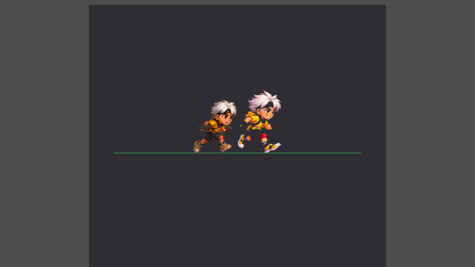
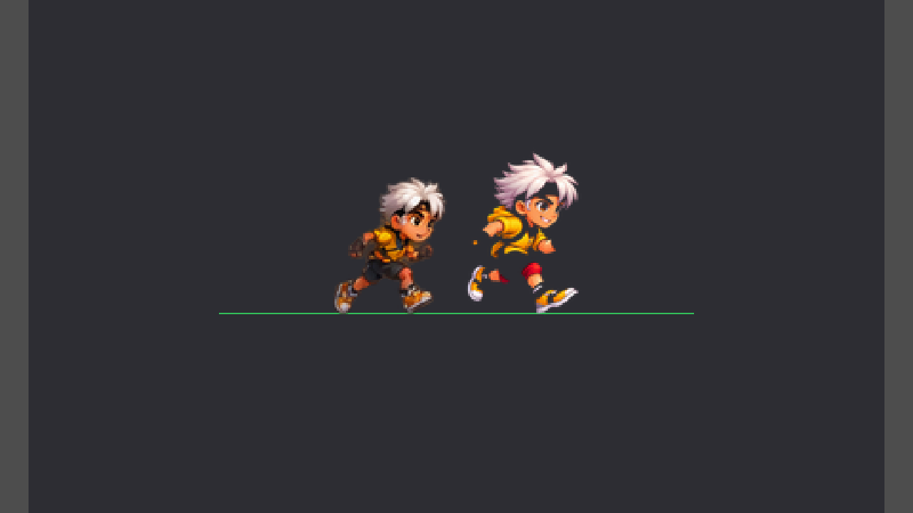
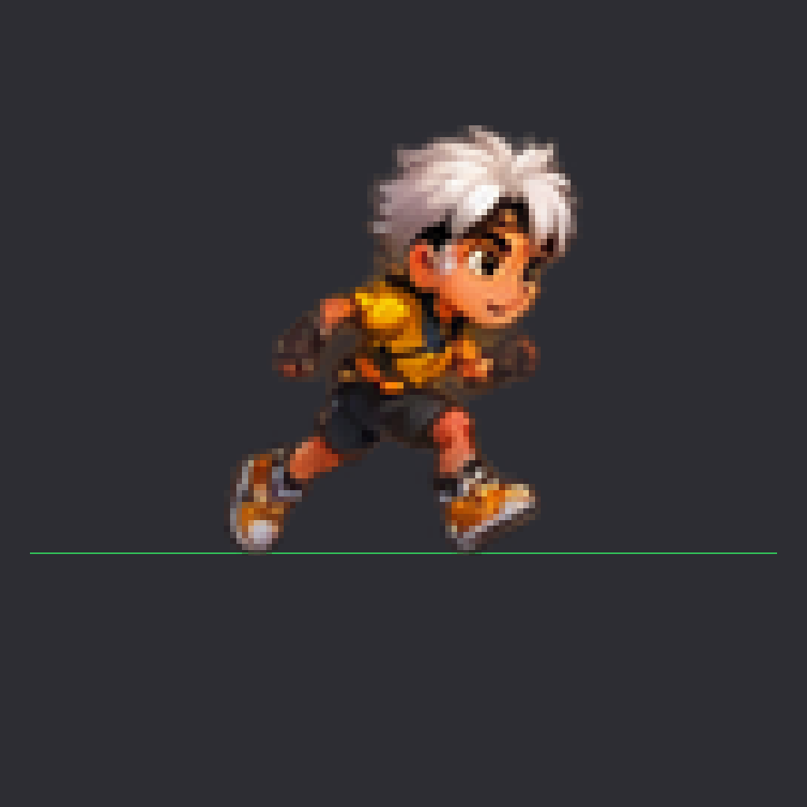
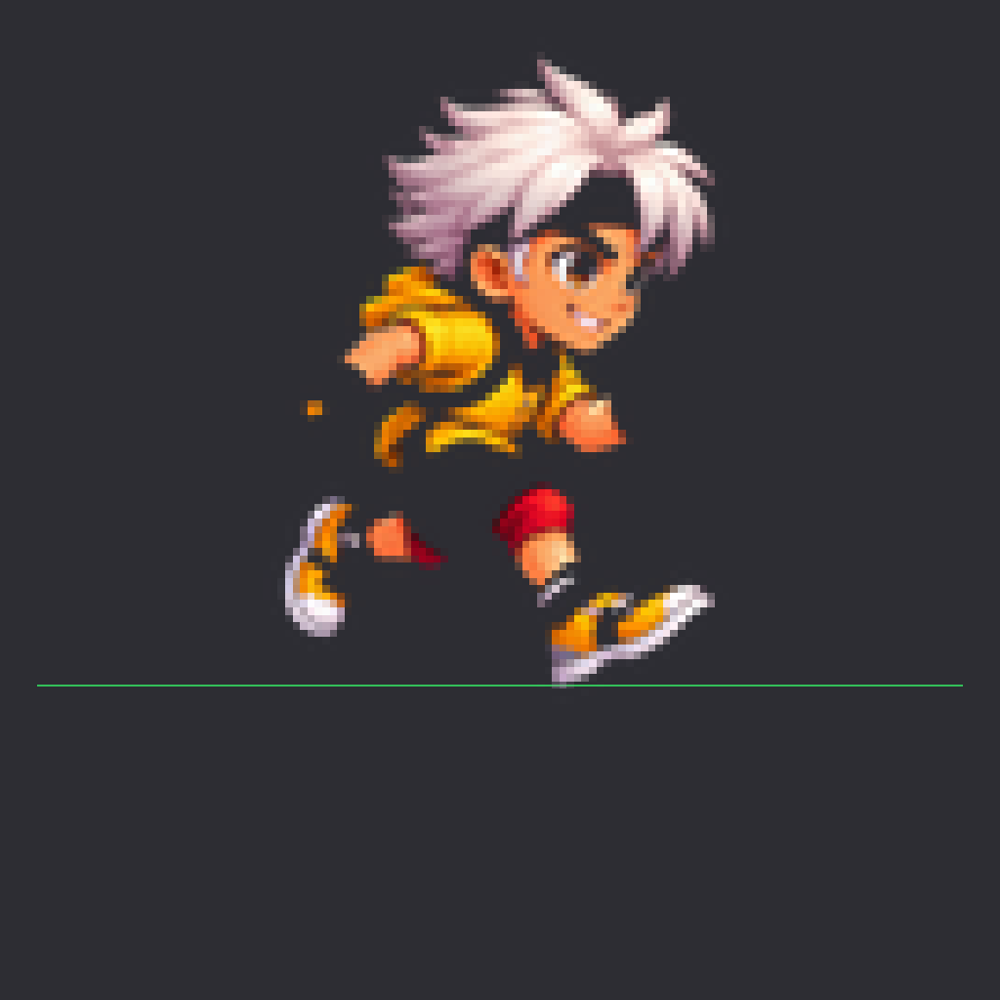
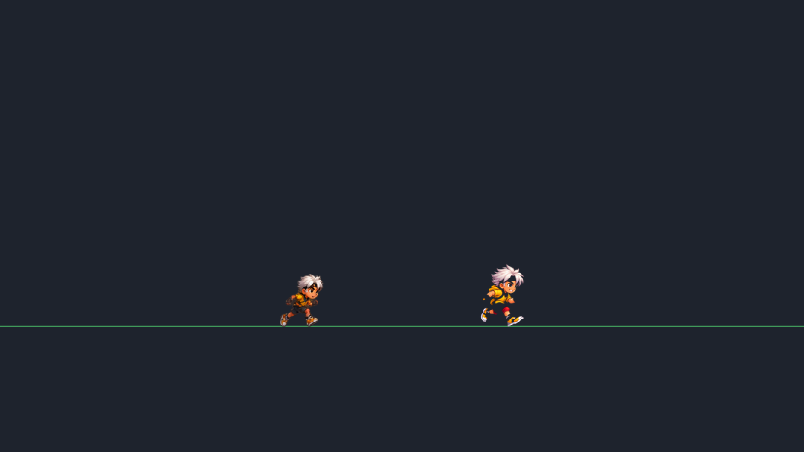
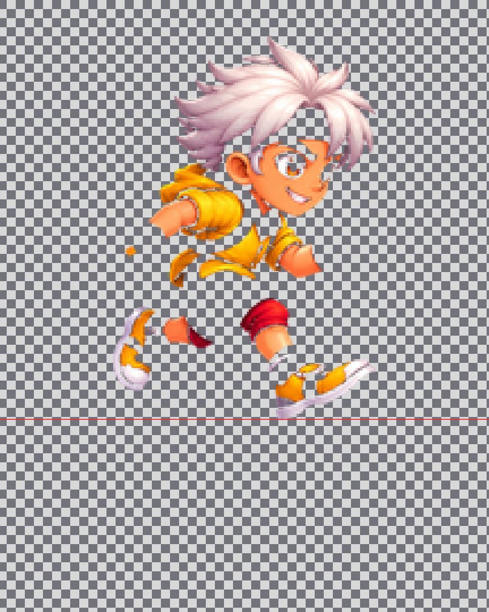

Tavola comparativa — stessa scala, piedi allineati
Sinistra = live run_00 · Destra = sperimentale 64×96 (whole-canvas da 128×192). Linea verde = suolo.

Slider interattivo (light BG pair)
Trascina per rivelare live vs sperimentale sulle capture Godot a sfondo chiaro (4× nearest).
Ingrandimenti nearest 4× e 8×
Nessuna interpolazione “migliorativa”: pixel evidenti.


Live ×8 nearest

Experimental ×8 nearest
Sfondo chiaro / scuro / scacchiera
Cambia sfondo per cercare aloni e fringe. Solo immagini Godot.
Dimensioni gameplay Android landscape
Viewport 1920×1080, DISPLAY_SCALE = 1.75 → sprite on-screen ≈ 112×168 px. Entrambi a piedi sulla stessa riga.

Sorgente 128×192 ×4 su scacchiera
Audit bordi del PNG autore (non il downscale 64×96).

Differenze misurate (64×96 canvas)
Da compare_metrics.json. Gate M6.1-D non superato.
| Metrica | Live run_00 | Experimental | Nota |
|---|---|---|---|
| BBox height | 72 px | 85 px | Exp ≈ +18% più alto nel canvas |
| Foot-x | 25.3 | 41.6 | Δ 16.3 px (pivot orizzontale diverso) |
| Pad piedi dal bottom | 2 px | 2 px | Allineabili verticalmente |
| Sharp (Laplacian) | 62.3 | 73.9 | Exp più “duro” ma con più fringe |
| Fringe % | 5.57 | 10.63 | Exp ~2× fringe (aloni cutout) |
| Mean RGB | 137,92,68 | 223,155,111 | Palette più saturata / costume diverso |
| Gameplay size | 112×168 @ 1.75× | Su 1920×1080 landscape | |
Costume: pantaloni lunghi + ginocchiera rossa vs shorts scuri live; giallo più saturo. Nitidezza: a 8× nearest si vedono pixel e speck arancioni staccati. Scala: fill silhouette maggiore → a parità di scale Godot l’exp domina il frame.